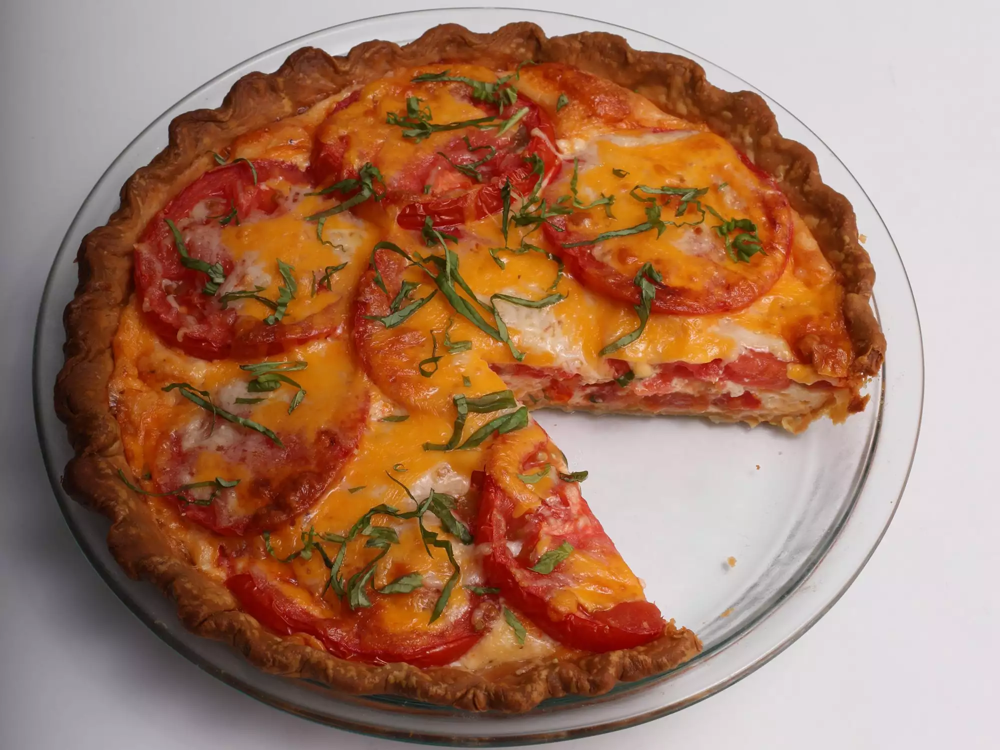

Tomato slices are juicy and mix in well with the creamy/cheesy "custard" in this Southern-inspired tomato pie. The blind baking method helps keep the crust nice and crunchy on the bottom.
- ½ (14.1 ounce) package refrigerated pie crusts, at room temperature
- 3 medium tomatoes
- 1 ¼ teaspoons kosher salt, divided
- ½ cup mayonnaise
- 2 ounces cream cheese, softened
- 1 ½ cups shredded sharp Cheddar cheese, divided
- 1 large egg, lightly beaten
- 1 tablespoon all-purpose flour
- 1 large clove garlic, minced
- ¼ teaspoon cayenne pepper
- ¼ teaspoon ground black pepper
- ¼ cup shredded Parmesan cheese
- 1 tablespoon thinly sliced fresh basil
- Preheat oven to 400 degrees F (200 degrees C). Fit pie crust inside a 9-inch pie plate, pressing into the bottom and up the sides of the plate. Fold crust edges under; crimp as desired. Place a piece of parchment paper over crust in pie plate, leaving a 3-inch overhang. Fill with pie weights or dried beans.
- Bake in the preheated oven for 10 minutes. Carefully remove parchment paper and pie weights. Continue baking until crust is light golden brown, 5 to 8 minutes more. Transfer to a wire rack; cool to room temperature, about 30 minutes. Reduce oven temperature to 375 degrees F (190 degrees C).
- Meanwhile, slice tomatoes crosswise into 1/4-inch thick slices; arrange tomato slices in a single layer on paper towels. Sprinkle with 3/4 teaspoon of the salt; let stand for 20 minutes. Pat tomato slices dry with paper towels.
- Whisk together mayonnaise and cream cheese until combined and smooth. Fold in 1 1/4 cups Cheddar cheese, egg, flour, garlic, cayenne, black pepper, and remaining 1/2 teaspoon salt until combined.
- Spread half of the Cheddar mixture in the pie crust. Layer with 1/3 of the tomato slices in slightly overlapping circles. Repeat procedure with remaining Cheddar mixture and another third of tomato slices. Top with remaining tomato slices in slightly overlapping circles. Sprinkle with Parmesan and remaining 1/4 cup Cheddar cheese.
- Bake pie in the preheated oven until filling is set and lightly browned on top, 30 to 35 minutes, tenting crust with aluminum foil to prevent excess browning, if needed. Let stand for at least 30 minutes before serving. Garnish with thinly sliced basil before serving.
Per Serving:
377 calories; fat 31.1g; cholesterol 65.2mg; sodium 733.8mg; carbohydrates 14.5g; protein 10.8g.